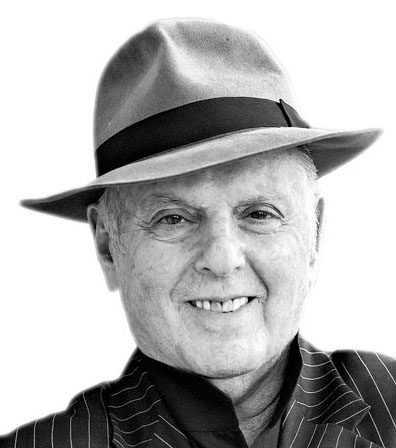

1
Liniers
Dibujante
En la última edición del Comic-con de San Diego, el historietista argentino ganó el Premio Eisner 2018, algo así como “el Oscar de la historieta”, en la categoría Mejor Publicación para Lectores Novatos (hasta ocho años) por su libro Buenas noches, Planeta
2

Bradley Cooper
Actor
En su doble papel de actor y director, protagoniza la tercera remake de Nace una estrella, con Lady Gaga, que, con presencia tanto en Toronto como en Venecia, ya se perfila como una firme candidata a los premios Oscar
3
Oksana Shachko
Activista
A los 31 años, la joven ucraniana fundadora de Femen fue hallada sin vida en su piso de París. Ella inventó una forma diferente de hacer feminismo para toda una nueva generación
4
Daniel Barenboim
Director de orquesta
Pese al frío polar, el domingo pasado el premiado director de orquesta y activista por la paz se presentó con la Staatskapelle Berlin: tocó gratis para una multitud (más de 10 mil personas) en la Plaza Vaticano. Ovacionado por la gente, hizo público el pedido de “no olvidar la cultura”
5
Pablo Maurette
Profesor de literatura
El creador de la exitosa iniciativa #Dante2018 redobló la apuesta y ayer se a profundizar en la cultura de una manera alternativa; esta vez, con la lectura colectiva de Decamerón en las redes